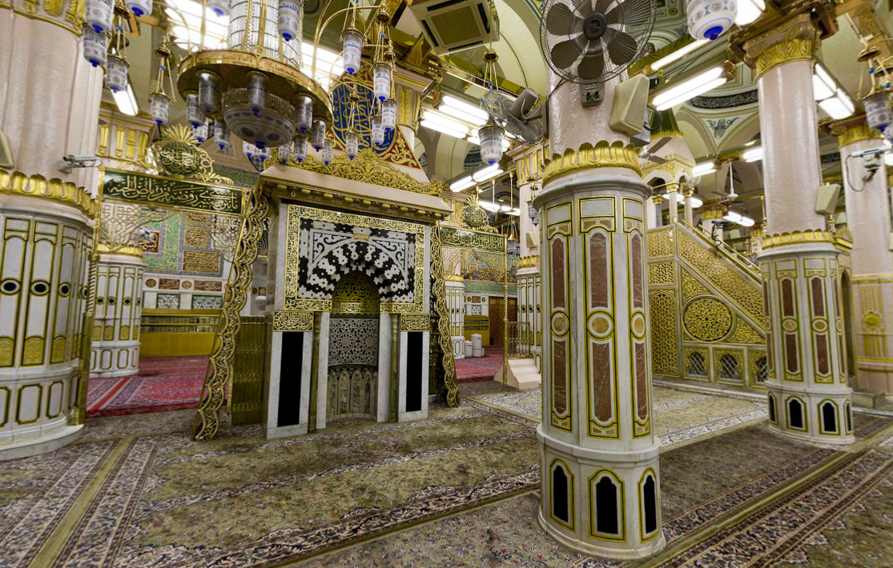
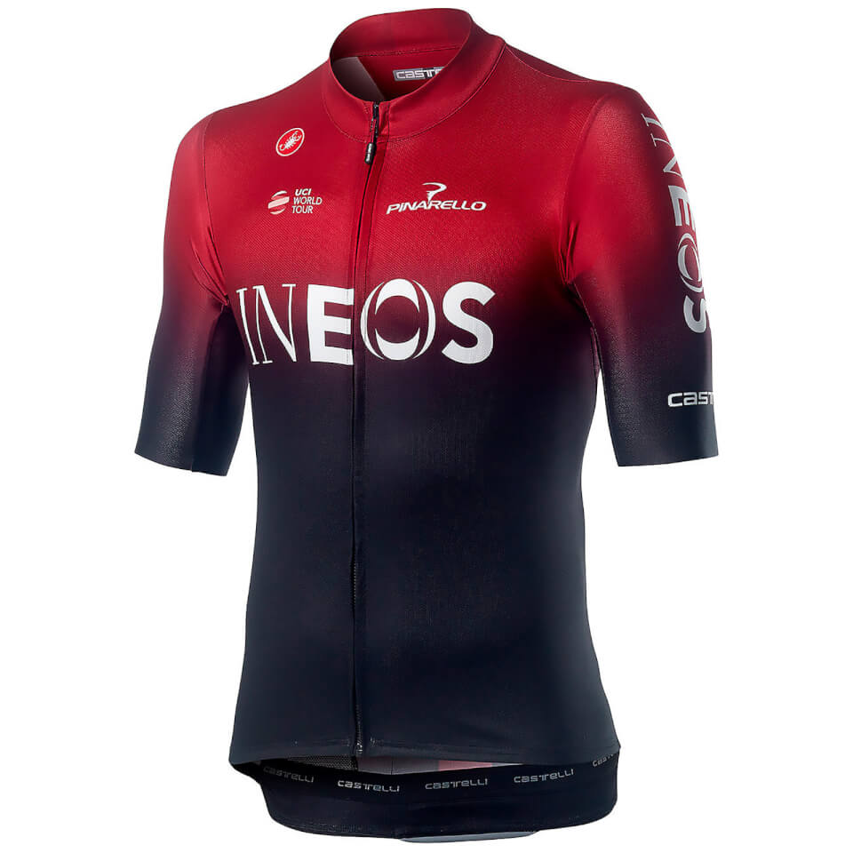
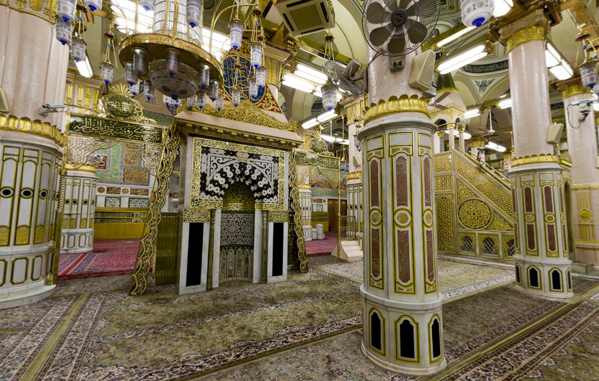
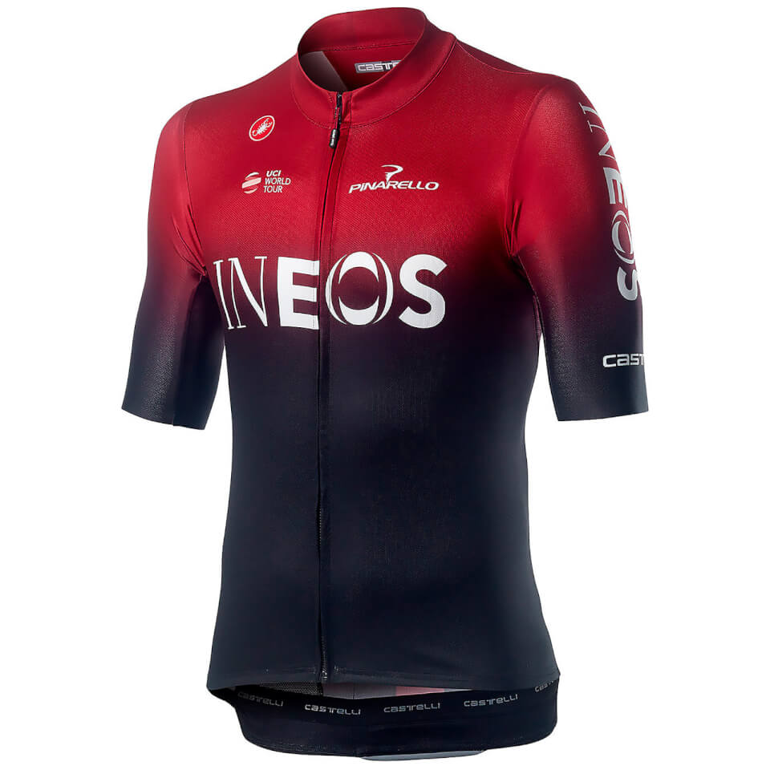

(DOC) Pemeriksaan Fisik | vQ beibi - Academia.edu
2021.03.24 18:32
Skip to main content
Academia.edu no longer supports Internet Explorer.
To browse Academia.edu and the wider internet faster and more securely, please take a few seconds to upgrade your browser .
Academia.edu uses cookies to personalize content, tailor ads and improve the user experience. By using our site, you agree to our collection of information through the use of cookies. To learn more, view our Privacy Policy . × Log In Sign Up Log In Sign Up more Job Board About Press Blog People Papers Terms Privacy Copyright We're Hiring! Help Center less Download Free DOC Download Free PDFPemeriksaan Fisik
vQ beibi Download PDF Download Full PDF Package This paper A short summary of this paper 37 Full PDF related to this paperREAD PAPER
Pemeriksaan Fisik
DownloadPemeriksaan Fisik
vQ beibiLoading Preview
Sorry, preview is currently unavailable. You can download the paper by clicking the button above.
Related Papers Buku Panduan CSL 2 2016 By stikes madani PENGKAJIAN SISTEM PERSYARAFAN DAN SISTEM PENCERNAAN..docx By kris monita Tambahan Lembaran Negara Republik Indonesia Nomor 4431); 2. Undang-Undang Nomor 36 Tahun 2009 tentang Kesehatan By Alfin Bakhtiar Ilhami Dr irfan file By Fatma Wati PANDUAN PRAKTEK KLINIS FISIOTERAPI IKATAN FISIOTERAPI INDONESIA By linerin linerin Download file × CloseLog In
Log In with FacebookLog In with Google
Sign Up with Apple or
or reset password
Need an account? Click here to sign up About Press Blog People Papers Job Board Advertise We're Hiring! Help Center Find new research papers in: Physics Chemistry Biology Health Sciences Ecology Earth Sciences Cognitive Science Mathematics Computer Science Terms Privacy Copyright Academia ©2021
- 7 Tujuan Utama Latihan Kondisi Fisik Penting Dilakukan
- Fizik SPM 2016 (Sebenar)
- Sports - Fisik
- Cara Mengisi Ciri Fisik Skck Online - SKCK
- (DOC) . PETUNJUK TEKNIS PENGUKURAN REALISASI FISIK ...
- Fisik Motorik | perdaniseptianarahayu1001110042
- Gelombang (Fizik T5) - SlideShare
- FIZIK 4531 Oktober 2020
- PEMERIKSAAN FISIK BAYI BARU LAHIR - WordPress.com
- Kondisi fisik wilayah 1 dataran rendah 2 curah hujan ...
- 7 Tujuan Utama Latihan Kondisi Fisik Penting Dilakukan
Kondisi fisik wilayah: (1) dataran rendah; (2) curah hujan tinggi; (3) merupakan daerah aliran sungai. Penggunaan wilayah sesuai kondisi fisik tersebut adalah sebagai daerah .... A. perkebunan B. pertanian C. waduk irigasi D. pembangkit listrik E. industri pemintalan 39. Perhatikan karakteristik negara berikut! 1) Pendapatan perkapita tinggi.
- Fizik SPM 2016 (Sebenar)
Teknik pemeriksaan fisik dada terbagi menjadi empat, yaitu inspeksi, palpasi, perkusi, dan auskultasi. Pemeriksaan ini sederhana dan cukup mudah dilakukan tanpa menimbulkan komplikasi. Pemeriksaan fisik dada
- Sports - Fisik
SULIT SMK Khir Johari SULIT 3 Section A Bahagian A [60 marks] [60 markah] Answer all questions in this section. Jawab semua soalan dalam bahagian ini. 1 Diagram 1.1 shows a liquid-in-glass thermometer. Rajah 1.1 menunjukkan satu termometer cecair-dalam–kaca. DIAGRAM 1.1
- Cara Mengisi Ciri Fisik Skck Online - SKCK
Keadaan fisik dari klien wajib diketahui dan dikaji oleh perawat / bidan maupun tenaga kesehatan lainnyayang memberikan asuhan. Anamnesa dan pemeriksaan fisik merupakan salah satu data penunjang dan mengetahui masalah apa yang dialami oleh klien agar diagnosa dapat ditegakkan. A.
- (DOC) . PETUNJUK TEKNIS PENGUKURAN REALISASI FISIK ...
Fizik SPM 2016 (Sebenar) - Free download as Powerpoint Presentation (.ppt / .pptx), PDF File (.pdf) or view presentation slides online. fz
- Fisik Motorik | perdaniseptianarahayu1001110042
SULIT 6 4531 ©Hak Cipta MPSM Negeri Perlis [Lihat sebelah SULIT 6 (a) Current produced when there is a relative motion between the
- Gelombang (Fizik T5) - SlideShare
Perkembangan fisik manusia meliputi berbagai aspek yang dipengaruhi sistem dan fungsi organ tubuh. Sistem syaraf yang sangat mempengaruhi perkembangan kecerdasan dan emosi. Sistem tulang dan otot-otot yang mempengaruhi perkembangan kekuatan dan kemampuan motorik. Sistem hormonal atau endokrin, yang menyebabkan munculnya pola-pola tingkah laku ...
- FIZIK 4531 Oktober 2020
Halodoc, Jakarta - Tentara adalah salah satu pekerjaan yang harus ditunjang oleh fisik yang prima.Cara bergabung ke sekolah militer dan menjadi tentara adalah melalui Seleksi Akademi Militer. Pada seleksi tersebut, terdapat beberapa tes yang akan dilakukan, salah satunya adalah tes fisik.Walau begitu, fisik bukan satu-satunya hal yang akan diukur.
- PEMERIKSAAN FISIK BAYI BARU LAHIR - WordPress.com
Pengukuran realisasi fisik dan non fisik kegiatan secara umum adalah kegiatan penetapan progres pekerjaan berdasarkan kemajuan pekerjaan. Pengukuran dilakukan dari a. Tujuan, Pernyataan sederhana yang jelas tentang dampak atau hasil yang akan dicapai oleh proyek b. Hasil, Tetapkan perubahan tingkat penerima dan populasi yang dibutuhkan untuk ...
- Kondisi fisik wilayah 1 dataran rendah 2 curah hujan ...
2. Geografi fisik. Geografi fisik adalah salah satu bentuk dari fenomena yang ada di permukaan bumi dengan proses terhadap penekanan geografis dan akan menjadi dasar kehidupan manusia, diantaranya adalah. Studi geologi – adalah salah satu masalah tentang bagaimana bumi telah terbentuk dan akan mengalami perubahan dengan seiring berjalannya waktu.
Kondisi fisik wilayah: (1) dataran rendah; (2) curah hujan tinggi; (3) merupakan daerah aliran sungai. Penggunaan wilayah sesuai kondisi fisik tersebut adalah sebagai daerah .... A. perkebunan B. pertanian C. waduk irigasi D. pembangkit listrik E. industri pemintalan 39. Perhatikan karakteristik negara berikut! 1) Pendapatan perkapita tinggi.
Teknik pemeriksaan fisik dada terbagi menjadi empat, yaitu inspeksi, palpasi, perkusi, dan auskultasi. Pemeriksaan ini sederhana dan cukup mudah dilakukan tanpa menimbulkan komplikasi. Pemeriksaan fisik dada
SULIT SMK Khir Johari SULIT 3 Section A Bahagian A [60 marks] [60 markah] Answer all questions in this section. Jawab semua soalan dalam bahagian ini. 1 Diagram 1.1 shows a liquid-in-glass thermometer. Rajah 1.1 menunjukkan satu termometer cecair-dalam–kaca. DIAGRAM 1.1
Keadaan fisik dari klien wajib diketahui dan dikaji oleh perawat / bidan maupun tenaga kesehatan lainnyayang memberikan asuhan. Anamnesa dan pemeriksaan fisik merupakan salah satu data penunjang dan mengetahui masalah apa yang dialami oleh klien agar diagnosa dapat ditegakkan. A.
Fizik SPM 2016 (Sebenar) - Free download as Powerpoint Presentation (.ppt / .pptx), PDF File (.pdf) or view presentation slides online. fz
SULIT 6 4531 ©Hak Cipta MPSM Negeri Perlis [Lihat sebelah SULIT 6 (a) Current produced when there is a relative motion between the
Perkembangan fisik manusia meliputi berbagai aspek yang dipengaruhi sistem dan fungsi organ tubuh. Sistem syaraf yang sangat mempengaruhi perkembangan kecerdasan dan emosi. Sistem tulang dan otot-otot yang mempengaruhi perkembangan kekuatan dan kemampuan motorik. Sistem hormonal atau endokrin, yang menyebabkan munculnya pola-pola tingkah laku ...
Halodoc, Jakarta - Tentara adalah salah satu pekerjaan yang harus ditunjang oleh fisik yang prima.Cara bergabung ke sekolah militer dan menjadi tentara adalah melalui Seleksi Akademi Militer. Pada seleksi tersebut, terdapat beberapa tes yang akan dilakukan, salah satunya adalah tes fisik.Walau begitu, fisik bukan satu-satunya hal yang akan diukur.
Pengukuran realisasi fisik dan non fisik kegiatan secara umum adalah kegiatan penetapan progres pekerjaan berdasarkan kemajuan pekerjaan. Pengukuran dilakukan dari a. Tujuan, Pernyataan sederhana yang jelas tentang dampak atau hasil yang akan dicapai oleh proyek b. Hasil, Tetapkan perubahan tingkat penerima dan populasi yang dibutuhkan untuk ...
2. Geografi fisik. Geografi fisik adalah salah satu bentuk dari fenomena yang ada di permukaan bumi dengan proses terhadap penekanan geografis dan akan menjadi dasar kehidupan manusia, diantaranya adalah. Studi geologi – adalah salah satu masalah tentang bagaimana bumi telah terbentuk dan akan mengalami perubahan dengan seiring berjalannya waktu.
 


